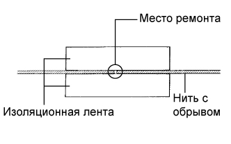
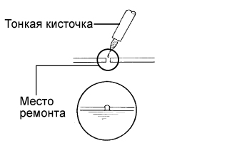

НИТИ ОБОГРЕВАТЕЛЯ СТЕКЛА > РЕМОНТ |
| 1. ОТРЕМОНТИРУЙТЕ НИТИ ОБОГРЕВАТЕЛЯ |
|  |
Обработайте концы разорванной нити средством для удаления смазочных, полировочных и силиконовых материалов.
Наклейте полоску изоляционной ленты по обеим сторонам нити.
Тщательно перемешайте восстановительную смесь.
|  |
При помощи тонкой кисточки нанесите небольшое количество пасты на нить.
Через несколько минут снимите изоляционную ленту.